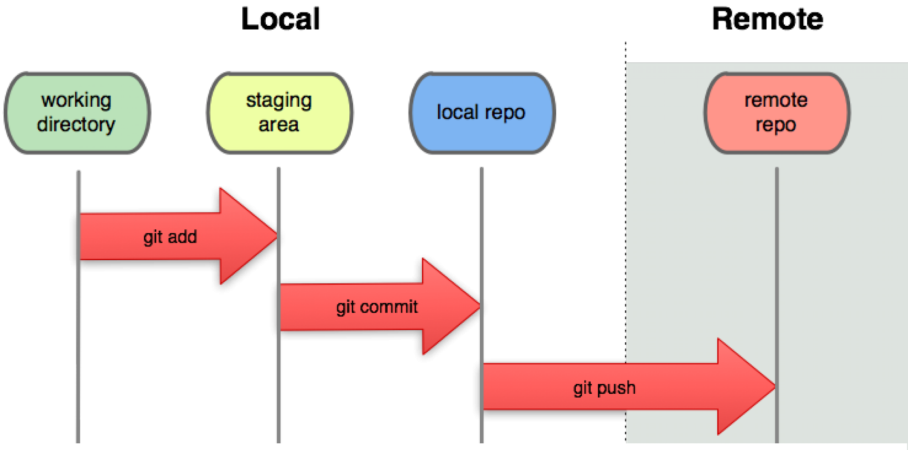
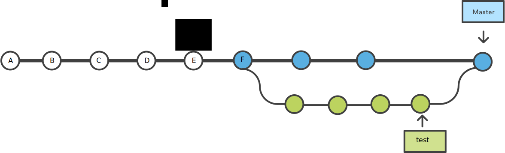

Git : Working collaboratively
2025-09-10
Commit tree

Process overview

The snapshot analogy
In the working directory, let’s try different poses (the version of the project in the working directory)
When satisfied by the pose of one guy, ask him stop moving (Staging area)
When satisfied with the whole scene, take the photo (Commit in the local repo)
Share your progress with your co workers
The current version of the project is indeed recorded in the version control system, but you are the only ones who know it.
You may want to share these changes to the remote repository from which we started.
To view the differences with the remote repository, use
git diff origin/master.To send our changes, , use
git push.



- Most of view receive errors message like
To github.com:MarieEtienne/stats-reminders.git
! [rejected] master -> master (fetch first)
error: failed to push some refs to 'github.com:MarieEtienne/stats-reminders.git'
hint: Updates were rejected because the remote contains work that you do not
hint: have locally. This is usually caused by another repository pushing to
hint: the same ref. If you want to integrate the remote changes, use
hint: 'git pull' before pushing again.
hint: See the 'Note about fast-forwards' in 'git push --help' for details., why ?
- Draw the commit tree.
Share your progress with your co workers

Be sure that all your changes have been committed
when works are diverged, you can have different attitudes. We go for the simple one for now and we need to specify this config for git
Retrieve the last version of the project on the server:
git pull origin masterThis might highlights conflicts: In case of conflict, you receive a very nasty message.
- Share the merged version on the server
- Solving conflicts implies choosing and You must resolve the conflict
Portion between <<<<<<< HEAD and ======= is your local version, while part between =======and >>>>>>> dfdf5995ade6e47899531a99e5947e719da86020 is the version available at commit with hash dfdf5995ade6e47899531a99e5947e719da86020.
Problem: the merge commit is not very readable in the development process. But one step at a time
Change someting in your local version of
Penguins_chapter.qmd,git add, commit, pull…..Solve conflicts
`git push’
Problem: Too much time spent at solving conflicts. We need another to minimize conflilcts

T1 
T2
T3
Associate trees with actions
One branch for one task
Goal minimising conflicts
Working in parralel and merging from time to time
Working in parallel:

Merging test within master: 
Creat a local branch and navigating between different branches
- Create your own branch and make some changes, add and commit them and now trying to push
Go on Github and look !
Create a second test branch
test_branch2and make some changesWe want to incorprate change make in test_branch2 in your personnal branch
Creates your own test_branch from the master branch and go on this branch
Remove
Penguins_chapter.qmdfrom the versioning systemgit rm Penguins_chapter.qmdlist the content your directory
Commit your changes in your branch
Switch to the master branch
List the contents of your directory
Delete your test_branch
git branch -d NAME_OF_YOUR_BRANCH
Create a branch and switch to this branch
Create a qmd file, name `Row_id.qmd”, id being the order of your row, 1 is the closes to the board.
Work by team, (a team = a row), to crate and solve conflicts